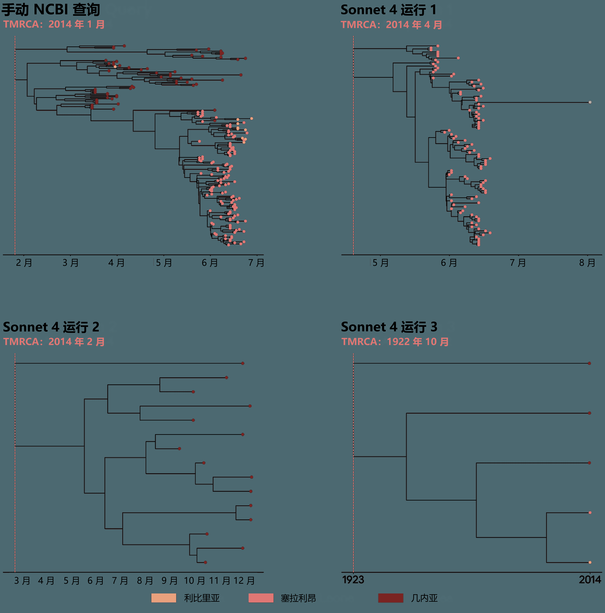

为生物学领域的AI代理铺路
📖 中文摘要
专业术语注解
代理（agent）：能自主规划并执行多步骤任务的AI系统确定性检索层：结果可重复、逻辑确定的数据库查询工具基准测试（benchmark）：统一衡量模型能力、有标准答案的任务集系统发育树（phylogenetic tree）：重建物种或病毒亲缘关系的树状图API：供程序调用数据库功能的编程接口📄 中文全文
- 类别： 科学
- 来源： https://www.anthropic.com/research/agents-in-biology
科学 2026 年 6 月 8 日 作者：Laura Luebbert。基于 Ferdous Nasri、Sarah Gurev、Patrick Varilly、Krithik Ramesh、Nuala A. O'Leary、Jonah Cool、Bernhard Y. Renard、Pardis Sabeti 和 Laura Luebbert 的研究。
在这篇文章中，Laura Luebbert 主张我们需要让生物数据基础设施对智能体更加友好。作为案例研究，她和她的团队让科学研究智能体（Claude、Biomni 开源版（Biomni OSS）¹、Edison Analysis²、GPT）从 NCBI Virus——病毒学家用于监测和诊断检测开发等任务的数据库——检索序列数据。即使是最强的模型也没有始终如一地达到可靠数据集构建所需的准确度。但一旦她和团队加入了 gget virus——一个确定性检索层——准确度就上升到接近 100%。对科学智能体而言，更广泛的教训是：确定性检索工具（目前）对让智能体工作流程更可靠至关重要，而生物数据库将需要以智能体作为规模化用户来设计。
用 AI 智能体在生物数据基础设施中穿行，就像开车穿过一座为汽车时代之前设计的古城：基础设施可能很美，甚至很周到，但满是狭窄蜿蜒的街道，现代车辆难以通行（特殊的文件格式、分散的数据库和一次性的检索脚本）。³ 你可以用交通标志、停车场和偶尔拓宽的道路来改造这座城市，但基本布局仍然难以通行，因为它当初是为另一种出行方式设计的。相比之下，软件基础设施基本上就是为汽车（智能体）的需求而造的：铺好的道路、清晰的车道、标准化的信号，以及为从头到尾快速行驶而设计的系统（版本控制、文档完善的 API 和包管理器）。 因此，编码智能体的进展比生物智能体快得多。软件通常提供结构化的数字工作流和可靠的接口，而计算生物学中用于数据检索和验证的基础设施往往是脆弱的、异构的和依赖流程的。我们用于在其中导航的工具必然是为特定领域或假说量身定制和调校的。此外，软件提供可测试的输出，可以快速编译和验证（例如，通过生成一个通过项目测试的补丁来解决 GitHub issue），而生物学很少提供简单、可验证却有意义的回报。 因此，生物智能体的瓶颈不仅在于推理，还在于缺乏广泛的确定性执行层来查询生物数据。科学家可以表达他们的意图（例如，找出所有具有该结构域的人类激酶并提取它们的结构），但智能体往往缺乏访问包含所需信息的数据库的可靠方式。 在生物和科学工作流程中，即使是小错误也可能造成严重后果。例如，从错误的基因组版本中检索坐标，就可能使下游的生物学解释失效。无意中混用 RefSeq 和 GenBank 记录、把部分基因组当作完整基因组、混淆分段病毒的片段名称，或因元数据字段不一致而遗漏相关记录，也是如此。研究之美与挑战在于，细节往往至关重要。 就像开车穿过一座意大利山城：如果街道太窄、弯道太急、路线依赖当地知识，那么车再强大也没用。如果我们想让智能体帮助科学发现——从疫情应对到药物设计再到生物建模——我们就需要构建它们能像人类一样可靠导航的生物数据基础设施。
**Karpathy 关于 Web 开发的演讲告诉了我们什么：用 AI 智能体做生物学
**
智能体需求与人类构建工具之间的这种不匹配并非生物学独有。只要把智能体插入到专为人类使用而设计的环境中，就会出现同样的摩擦。 几个月前，Andrej Karpathy 做了一个关于 AI 时代软件的演讲，最后抱怨了一件听起来太熟悉的事情。他用 vibe-coding 做了一款小型 Web 应用，但当他试图把它变成真正可用的产品（身份验证、支付、部署）时，他在浏览器仪表板里点击折腾了一周。 正如他所总结的：「代码是最容易的部分！大部分工作都在浏览器里，点来点去。」文档一直告诉他「去这个 URL，点这个下拉菜单」。他的结论是，没有人应该做这种事。相反，我们必须为智能体而构建。 Karpathy 在软件智能体世界中经历了某种新事物，而生物学研究者已经与之斗争了很久：试图让智能系统在围绕异构信息、隐含约定和人类点击浏览器的环境中运行所带来的痛苦。
**案例研究：病毒学中的「点击税」
**
早在 AI 智能体出现之前，计算生物学家和遗传学家就已经开始为传统计算生物学制造工具，逐渐蚕食这个问题。Biopython、BioPerl、BioJulia、Entrez Direct、BioMart、gget 等软件包以及许多其他工作流库，都是在努力把生物数据从浏览器界面搬到研究者可以直接在其上进行计算的地方。 问题在于，生物数据并不存在于一个具有单一接口的单一数据库中。它是一个混乱的道路网络，每条路都有自己的标识符、约定、格式、过滤逻辑和程序化访问程度。有些数据很容易以程序化方式访问。另一些则不那么容易。 病毒学尤其属于较难的情况之一。从疫苗和诊断检测设计到为蛋白质模型构建训练数据，研究工作流往往始于从 NCBI Virus 检索序列。NCBI Virus 是 GenBank、RefSeq 以及包括 Pathoplexus 在内的国际 INSDC 生态系统中的病毒序列记录集合，背后是一个可搜索的 Web 界面。作为病毒暴发监测构建工具的研究者，我们深知这些检索背后隐藏着多少专家知识。在病毒学实验室里，NCBI Virus 的数据集整理说明往往以长长的复杂过滤器列表形式传阅，用户必须在 Web 界面中手动复现这些过滤器：这正是 Karpathy 抱怨的那种浏览器点击工作流。 当前刚果民主共和国由本迪布焦病毒（Bundibugyo virus）引起的埃博拉病暴发，就是一个鲜明的例子，说明简化的病毒数据访问可能带来真实世界生死攸关的后果。2026 年 5 月 14 日，刚果民主共和国金沙萨国家生物医学研究所（INRB）分析了 13 份血样，次日确认其中八份为本迪布焦病毒病，⁴ 随后宣布暴发埃博拉疫情。到 5 月 29 日，WHO 已报告刚果民主共和国境内超过 1,000 例确诊和疑似病例，包括 200 多例死亡。研究人员还生成了首批近乎完整的暴发基因组，帮助确认这次暴发是由一次新的溢出事件引起的。 这些基因组给公共卫生官员带来了三个紧迫的问题。首先，这次暴发的病毒与此前见过的埃博拉病毒有多大不同？其次，现有的诊断方法还能检测到它吗？第三，现有的疗法还能保护人们免受其害吗？回答这些问题需要将新基因组与通过 NCBI Virus 和 Pathoplexus（与 NCBI Virus 同步）获得的埃博拉历史基因组进行比较。但这一步并非轻易可自动化：分析的初始步骤涉及手动点击 Web 界面、手工复现复杂过滤器，并寄希望于最终数据集完整且正确。 这个工作流难以自动化的原因是，NCBI Virus 的很多过滤逻辑只存在于这个 Web 界面中。这对人类来说很烦人，对智能体来说则是灾难性的。如果研究者想要 2025 年发布的所有含表面糖蛋白的 SARS-CoV-2 序列，一位经验丰富的病毒学家在浏览器里点几下可能就行。但以程序化方式，可能需要一个数百行的脚本，把多个 API（REST、Datasets、E-utilities）粘合起来，逐页检索结果、核对标识符、下载数百 GB 的数据，结果在本地过滤后大部分都要丢弃。 即使某个资源有 API，由于各种原因，智能体也可能难以可靠使用——例如 API 没有暴露与 Web 界面相同的过滤语义、元数据字段文档不全或标准化不一致、标识符跨来源变化，或者「正确答案」依赖于专家人类知晓而机器只能推断的约定。
**当智能体无论如何都要尝试时会发生什么
** 为了更好地理解把智能体与数据库连接起来的挑战，我们开发了一个测试，检验最先进的科学研究智能体（Claude、Biomni OSS、Edison Analysis、GPT）在被要求使用现有基础设施从 NCBI Virus 检索病毒序列时有多能干。我们的基准 VirBench 包含 120 个现实的病毒序列查询，覆盖 40 种病原体，并配有经人工验证的基准真值计数。这些查询反映了病毒监测、诊断检测设计和蛋白质模型训练数据构建中出现的任务。例如，一个查询要求智能体「从 NCBI 检索 TaxID 3052462（扎伊尔正埃博拉病毒（ZEBOV））的病毒序列，须满足以下标准：宿主生物：人类，样本采集地理位置：非洲，采集日期在 2014 年 1 月 1 日或之后、2014 年 6 月 20 日或之前，最短序列长度：15,200 个碱基，最多 1,900 个模糊字符（N），排除实验室传代样本。」 当智能体被放手自行解决这些查询时，各系统之间的性能差异很大，而且更新的前沿模型有实质性的改进。然而，即使是最强的模型也没有始终如一地达到可靠数据集构建所需的准确度和可重复性。Claude Sonnet 4、Claude Opus 4.7、Biomni OSS、Edison Analysis、GPT-5.2-pro 和 GPT-5.5 的平均准确度从 16.9% 到 91.3% 不等。对于这些数据检索任务，门槛实际上是 100%：在某些情况下，一条缺失或错误的记录可能决定一个诊断检测是否看起来覆盖了流行中的病毒多样性，或决定一次暴发被推断为比实际早几周还是晚几周开始。此外，同一个模型在被问同一个问题三次时，常常给出差异很大的答案，破坏了可靠科学工作流程所需的准确度和可重复性。对于上面那个埃博拉病毒示例查询，Sonnet 4⁶ 一次运行返回了 106 条序列（预期：266 条），第二次返回 15 条，第三次返回 5 条，尽管每次收到的提示词完全相同。 诸如此类的不一致会给下游分析带来后果。我们用上面展示的查询检索埃博拉病毒序列并构建系统发育树——这是重建暴发期间病毒样本亲缘关系的标准分析。我们能从系统发育树中获得的一个重要量是到最近共同祖先的估计时间（TMRCA）。这是推断出的暴发根日期，它可以改变关于病毒起源时间和地点以及病毒循环了多久的结论。在本例中，从人工整理的 NCBI Virus 序列集构建的树恢复了 2014 年 1 月的 TMRCA，与 2014 年埃博拉病毒暴发的先前报告（95% 最高后验密度区间为 1 月 27 日至 3 月 14 日）一致。相比之下，Sonnet 4 检索到的三个序列集中的两个明显不完整，其中一棵树把推断的 TMRCA 推回到了 1922 年。剩下的数据集（运行 1）表面上看似乎合理，但没有检索到几内亚的序列，并把估计的 TMRCA 移到了 2014 年 4 月，改变了推断的暴发时间。

使用 Delphy 推断的 2014 年西非疫情扎伊尔埃博拉病毒系统发育树。末端按采样国家着色；灰色表示缺失或错误检索的国家元数据。红色虚线标记每棵树到最近共同祖先的估计时间（TMRCA）。左上方的树由通过 NCBI Web 界面手动检索的序列构建，而运行 1–3 由 Sonnet 4 智能体使用网络搜索和代码执行工具组装的序列集生成。分析与可视化：Gage Moreno。 NCBI Virus 检索尝试之间的变异性也会影响关于疗法的结论。我们检索了埃博拉病毒糖蛋白序列，以检查 maftivimab 和 MBP134 所结合的表位——这两种抗体疗法是针对扎伊尔埃博拉病毒开发的，也是当前埃博拉病毒暴发中的 WHO 优先治疗候选药物。我们询问，在相关的扎伊尔埃博拉病毒序列中，这些抗体靶向的区域以前是否出现过突变。这类分析可以让研究者了解，随着病毒进化，一种疗法是否还能继续保护患者。如果底层序列不完整或被错误获取，就可能推翻他们的结论。在我们的示例中，Sonnet 4 检索的序列在第一次尝试时接近通过手动 NCBI 查询获得的结果。在重复运行时，它遗漏了大部分突变残基。而在第三次运行时，它突出了另一组不同的残基，对这些靶区域的变异性产生了三种不同的印象。⁷ 扎伊尔埃博拉病毒糖蛋白上的现存突变以红色显示，颜色越深表示突变频率越高。球体表示抗体疗法 maftivimab 和 MBP134 的已知足迹。最左边的可视化由人工整理的 NCBI 数据集构建，而运行 1–3 由 Sonnet 4 智能体使用网络搜索和代码执行工具组装的序列集生成。所示的 PDB 结构为 7TN9。分析与可视化：Sarah Gurev。
这两个例子都说明了科学中的一个更广泛模式：看起来只是微小检索选择的细节，却可能改变生物学结论。在本例中，病毒序列检索中不一致的模型性能以及失败模式的性质表明，大部分变异可归因于基础设施的缺陷。当智能体未能检索大型结果集时，它们会少计数；当过滤器应用错误时，它们会多计数。例如，与预期计数偏差最大的是可用记录数量庞大的病毒，包括甲型流感、HIV-1 和 SARS-CoV-2——在这些病毒上，检索中途停止和不正确的下游过滤会严重扭曲最终数据集。它们还在其含义取决于上下文、约定或信息恰好存储位置的元数据字段上遇到困难。随着查询变得更加复杂——尤其是超过三四个同时过滤器时——性能逐渐下降。
归根结底，智能体往往对任务理解得足够好，足以尝试执行，但它们缺乏一种机器可执行的方式来完成任务、验证任务并重复任务。由此产生的答案可能看起来合理，而实际上却是错误的，这尤其危险，因为序列检索通常是更长的生物学工作流的第一步。
扎伊尔埃博拉病毒糖蛋白上的现存突变以红色显示，颜色越深表示突变频率越高。球体表示抗体疗法 maftivimab 和 MBP134 的已知足迹。最左边的可视化由人工整理的 NCBI 数据集构建，而运行 1–3 由 Sonnet 4 智能体使用网络搜索和代码执行工具组装的序列集生成。所示的 PDB 结构为 7TN9。分析与可视化：Sarah Gurev。
这两个例子都说明了科学中的一个更广泛模式：看起来只是微小检索选择的细节，却可能改变生物学结论。在本例中，病毒序列检索中不一致的模型性能以及失败模式的性质表明，大部分变异可归因于基础设施的缺陷。当智能体未能检索大型结果集时，它们会少计数；当过滤器应用错误时，它们会多计数。例如，与预期计数偏差最大的是可用记录数量庞大的病毒，包括甲型流感、HIV-1 和 SARS-CoV-2——在这些病毒上，检索中途停止和不正确的下游过滤会严重扭曲最终数据集。它们还在其含义取决于上下文、约定或信息恰好存储位置的元数据字段上遇到困难。随着查询变得更加复杂——尤其是超过三四个同时过滤器时——性能逐渐下降。
归根结底，智能体往往对任务理解得足够好，足以尝试执行，但它们缺乏一种机器可执行的方式来完成任务、验证任务并重复任务。由此产生的答案可能看起来合理，而实际上却是错误的，这尤其危险，因为序列检索通常是更长的生物学工作流的第一步。
**用于病毒数据检索的确定性层
**
关于 VirBench 和 gget virus 的更详细说明，请阅读预印本。
为了把病毒数据检索变成智能体和人类可以直接调用的东西，我们与 NCBI 的研究人员合作开发了 gget virus。起初，这看起来可能只是连接正确 API 调用那么简单。实际上要难得多：NCBI Virus 是多个底层资源的门户，包括在美国、欧洲和日本维护的国际同步序列数据库，因此回答一个看似简单的查询往往需要拼合来自多个地方的信息。
为了复现 NCBI Virus Web 界面的行为，gget virus 必须协调其下的不同系统，包括 REST、Datasets 和 E-utilities API。gget virus 决定哪些过滤器可以通过这些现有 API 应用，哪些必须在本地检查，因为 Web 界面暴露的过滤行为无法从单一程序化端点获得。它处理批量检索，使大型结果集（如 SARS-CoV-2 和甲型流感数据集）被完整检索，而不是被任意截断。当过滤依赖于存储在单独数据库中的附加信息（例如指示序列是否包含特定病毒蛋白的 GenBank 记录）时，gget virus 会检索这些记录，用它们来应用过滤器，并在最终输出中保留相关的 GenBank 信息。然后它返回人和机器都可读的标准化输出，并附有详细日志，显示最终结果是如何产生的。⁸
 AI 智能体在有和没有 gget virus 时在 VirBench 基准上的表现。VirBench 评估智能体正确检索病毒序列数据集的能力。最后一根柱状图显示 gget virus 直接运行、不经智能体的结果。图改编自 Nasri 等人，2026。
当我们让智能体访问 gget virus 后，所有智能体的准确度都上升到 90% 以上，GPT-5.5 达到 99.7% 的峰值。运行间的变异性基本被消除，模型之间的性能差距急剧缩小。换言之，增加一个确定性检索层让模型选择变得不那么重要了。这一点尤其重要，因为可靠的数据集构建不应依赖于能否访问最新或最昂贵的模型，也不应依赖于知道哪个模型对给定数据库效果最好。相反，更便宜的模型加上正确的工具可以减少变异性并实现更广泛的访问。
gget virus 通过把一个复杂的、基于浏览器的检索工作流转变成一个准确且可重复的接口，使现有智能体在病毒数据检索上更加可靠。回到我们那个可步行城市的类比：这就像我们在人行基础设施下面加了一条高速公路隧道，配有上下匝道、畅通的互通立交，以及通往已知里程碑的出口编号。
AI 智能体在有和没有 gget virus 时在 VirBench 基准上的表现。VirBench 评估智能体正确检索病毒序列数据集的能力。最后一根柱状图显示 gget virus 直接运行、不经智能体的结果。图改编自 Nasri 等人，2026。
当我们让智能体访问 gget virus 后，所有智能体的准确度都上升到 90% 以上，GPT-5.5 达到 99.7% 的峰值。运行间的变异性基本被消除，模型之间的性能差距急剧缩小。换言之，增加一个确定性检索层让模型选择变得不那么重要了。这一点尤其重要，因为可靠的数据集构建不应依赖于能否访问最新或最昂贵的模型，也不应依赖于知道哪个模型对给定数据库效果最好。相反，更便宜的模型加上正确的工具可以减少变异性并实现更广泛的访问。
gget virus 通过把一个复杂的、基于浏览器的检索工作流转变成一个准确且可重复的接口，使现有智能体在病毒数据检索上更加可靠。回到我们那个可步行城市的类比：这就像我们在人行基础设施下面加了一条高速公路隧道，配有上下匝道、畅通的互通立交，以及通往已知里程碑的出口编号。
正如 Karpathy 所说：「让[基因组数据]对智能体可访问」
我们希望模型在生成假说、设计实验或推理机制时富有创造力。但创造力之下的那一层——基因标识符、模式、检索逻辑、坐标系统、元数据约定和数据访问路径——必须无聊地可靠（或者换句话说，确定性的）。gget virus 是构建这些_上下文引擎_的更广泛努力中的一个例子：为生物数据构建可靠、智能体可访问的基础设施。其他努力正在从 AI-for-science（面向科学的 AI）系统中涌现，其中许多依赖把智能体连接到生物数据源的模型连接框架（harness），包括 ToolUniverse、Edison Scientific 的 Robin、Biomni 以及相关的生物医学智能体。挑战在于弄清楚这种确定性应该放在哪里，以及如何构建它。 当我们考虑到模型能力变化之快时，连接器和连接框架的工作就变得更加棘手。如果我们把上面的结果沿模型曲线向前延伸，很容易想象一个（非常近的）未来，像 gget virus 这样的工具的收益趋近于零：智能体变得足够好，能自行穿越混乱的门户、核对标识符、正确分页并从失败中恢复。在那个世界里，连接框架可能不再需要。尽管如此，即使智能体能做到，也不意味着这项任务应该每次都由智能体处理（并重新发明）。一个能艰难穿过混乱生物信息学工作流的模型，对于常规科学工作来说可能仍然太贵、太慢、太难审计或太难信任。而且，如果智能体最终让今天的连接框架过时，对生物数据库的教训依然成立：在考虑我们的用户时，我们需要把智能体也考虑进去，我们需要为规模而构建。
**致谢
**
我们感谢 Xander Balwit、Ethan Dyer、Stuart Ritchie、Rebecca Hiscott、Alyssa Morrow、Keir Bradwell、Eric Kauderer-Abrams、Jonah Cool、Andrej Karpathy、Patrick Varilly、Cesar Arze、Blake Lash、Philine Guckelberger、Nisha Gopal、Elliot Hershberg、Pardis Sabeti 和 Jonathan Feldman 提出的深思熟虑的反馈、细致的编辑和富有帮助的讨论，这些都改进了这篇文章。 我们尤其感谢 Sarah Gurev 和 Gage Moreno 帮助开发和执行示例病毒学分析，以及 Ferdous Nasri 和 Krithik Ramesh，他们对这篇文章的想法、框架和写作做出了重大贡献。
脚注
- Biomni 开源版（Biomni OSS）指 Biomni 的开源版本（https://github.com/snap-stanford/Biomni，v0.0.8），底层 LLM 为 Claude Sonnet 4。它不反映 Phylo 的 Biomni Lab 产品的性能。
- 于 2026 年 2 月 26 日评估。由于任务的性质，Edison Analysis 使用了较旧的备用模型，如 Claude Sonnet 4，这些模型可以完成基准测试而不会触发生物安全相关的访问限制。因此，Edison Analysis 的结果不应被解读为与使用 Opus 4.7 获得的结果直接可比。
- 关于为什么生物软件常常感觉支离破碎、维护不足、难以使用的更深入叙述，见 Elliot Hershberg 的文章「生命科学中的软件实际上如何运作（以及为什么不运作）」。
- 我们感谢并认可刚果民主共和国国家生物医学研究所（INRB）和乌干达中央公共卫生实验室（CPHL）的团队，他们在 2026 年 5 月暴发期间快速完成了测序、分析并开放共享了首批本迪布焦病毒基因组。
- 在 360 次运行中的一次（查询 32，第三次重复）中，GPT-5.5 在没有被明确提示的情况下独立识别并使用了 gget virus。这是该问题的唯一一次正确回答运行。
- Claude Sonnet 4 代表可用于此评估的最新公开 Anthropic 模型，因为更新模型随后受到生物安全相关的访问限制。
- 这里进行的所有分析仅供说明之用，不旨在提供医疗或公共卫生指导；关于埃博拉病治疗建议，请参考 WHO 官方指南。
- 呼应 Nils Homer 最近关于 AI-ready 生物信息学工具的观点：「AI 助手需要能与你的代码、你的输出和你的分析逻辑协同工作。」这使智能体不仅能检查检索到了什么，还能检查它是如何被检索的，把一个看似合理的答案变成可以检查和复现的东西。
相关内容
进一步了解 Claude 的数学能力
一个未发布的研究版 Claude 在与黎曼猜想相关的问题上取得了进展。它改进了黎曼 zeta 函数满足该猜想的零点比例的长期下界，将其从 41.6% 提高到 67.2%。 阅读更多
用 Claude 发现密码学弱点
密码算法。第一次攻击显著削弱了 HAWK——一种为未来量子计算机能够破解现有标准的世界而构建的数字签名方案。第二次攻击确定了一种攻击轮数缩减 AES（使用最广泛的对称密码）的新方法。 阅读更多
Project Pilot：AI 能控制无人机吗？
我们与 Andon Labs 合作，开发了一系列评估 AI 模型使用飞行无人机能力的新测试，最终形成了一个新基准：Drone-Bench。 阅读更多
订阅 Anthropic Science
关于 AI 辅助发现、实用工作流程以及各科学领域实地笔记的专题文章。
▸ 英文原文（点击展开）
Paving the way for agents in biology
- Category: Science
- Source: https://www.anthropic.com/research/agents-in-biology
Science
Paving the way for agents in biology
Jun 8, 2026 Written by Laura Luebbert. Based on research by Ferdous Nasri, Sarah Gurev, Patrick Varilly, Krithik Ramesh, Nuala A. O’Leary, Jonah Cool, Bernhard Y. Renard, Pardis Sabeti, and Laura Luebbert.
_In this post, Laura Luebbert argues that we need to make biological data infrastructure more agent-friendly. As a case study, she and her team tasked scientific research agents (Claude, Biomni Open Source (Biomni OSS) 1, Edison Analysis,2 GPT) to retrieve the sequence data from NCBI Virus, a database virologists use for tasks such as surveillance and diagnostic assay development. Even the strongest models did not consistently achieve the level of accuracy required for reliable dataset construction. But accuracy rose to nearly 100% once she and her team added gget virus, a deterministic retrieval layer. The broader lesson for scientific agents is that deterministic retrieval tools are (currently) crucial to making agent workflows more reliable, and biological databases will need to be designed with agents in mind as scaled users.
_Using AI agents to navigate biological data infrastructure is like driving through an old city that was designed before cars: the infrastructure may be beautiful and even thoughtful, but it’s full of narrow, winding streets that are difficult for modern vehicles to navigate (idiosyncratic file formats, scattered databases, and one-off retrieval scripts).3 You can retrofit the city with traffic signs, parking lots, and the occasional widened road, but the basic layout remains hard to navigate because it was designed for a different mode of conveyance. Software infrastructure, by contrast, was basically made for the needs of cars (agents): paved roads, clear lanes, standardized signals, and systems designed for fast travel from start to finish (version control, well-documented APIs, and package managers). As a result, coding agents have advanced much more quickly than biological agents. Software commonly provides structured digital workflows and reliable interfaces, whereas the computational biology infrastructure needed for data retrieval and validation is often brittle, heterogeneous, and process-dependent. The tools with which we navigate them are necessarily bespoke and tuned to defined domains or hypotheses. Moreover, software provides testable outputs that can be quickly compiled and validated (e.g., resolving a GitHub issue by generating a patch that passes the project’s tests), whereas biology offers few simple and verifiable yet meaningful rewards. Thus, the bottleneck for biological agents is not only reasoning but the absence of widespread deterministic execution layers for querying biological data. A scientist can express their intent (e.g., find all human kinases with this domain and pull their structures), but agents often lack a dependable way to access the databases containing the information they need. In biological and scientific workflows, even small errors can have severe consequences. Retrieving coordinates from the wrong genome build, for example, can invalidate the downstream biological interpretation. So can mixing RefSeq and GenBank records without intending to, treating partial genomes as complete genomes, confusing segment names in segmented viruses, or missing relevant records because of inconsistent metadata fields. The beauty and challenge of research is that the details are often of critical importance. Like driving through an Italian hill town, it does not matter how powerful the car is if the streets are too narrow, the turns too sharp, and the route depends on local knowledge. If we want agents to help with scientific discovery, from outbreak response to drug design to biological modeling, we need to build biological data infrastructure that they can navigate as reliably as humans do.
**What Karpathy’s lecture about web development tells us about doing biology with AI agents
** This mismatch between agent needs and human-built tools is not unique to biology. The same friction emerges wherever agents are inserted into environments designed solely for human use. A few months ago, Andrej Karpathy gave a talk about software in the era of AI and ended up griping about something that sounded all too familiar. He had vibe-coded a small web app, but when he tried to make it real (authentication, payments, deployment), he lost a week clicking around in browser dashboards. As he summarized, “The code was the easiest part! Most of the work was in the browser, clicking things.” Documentation kept telling him to “go to this URL, click on this dropdown.” His conclusion was that nobody should have to do this. Instead, we must build for agents. Karpathy had experienced something new within the world of software agents that biology researchers have been struggling with for a long time: the pain of trying to make intelligent systems operate in environments built around heterogeneous information, implicit conventions, and humans clicking through browsers.
**A case study: The click tax in virology
** Long before AI agents, computational biologists and geneticists had already begun to produce tools for traditional computational biology, which chipped away at this problem. Packages like Biopython, BioPerl, BioJulia, Entrez Direct, BioMart, gget, and many other workflow libraries are all efforts to move biological data out of browser interfaces and into places where researchers can compute on it directly. The problem is that biological data does not live in a single database with a single interface. It is a messy network of roads, each with its own identifiers, conventions, formats, filtering logic, and degree of programmatic access. Some data are straightforward to access programmatically. Others, not so much. Virology, in particular, is one of the harder cases. Research workflows from vaccine and diagnostic assay design to building training data for protein models often begin by retrieving sequences from NCBI Virus, a collection of viral sequence records from GenBank, RefSeq, and the international INSDC ecosystem, including Pathoplexus, behind a searchable web interface. As researchers building tools for viral outbreak surveillance, we know firsthand how much expert knowledge is hidden behind these retrievals. In virology labs, dataset curation instructions for NCBI Virus are often passed around as long lists of complex filters that users must manually reproduce in the web interface: exactly the kind of browser-clicking workflow Karpathy was complaining about. The current outbreak of Ebola disease caused by Bundibugyo virus in the Democratic Republic of Congo is a stark example of why streamlined viral data access can have real-world, life-or-death consequences. On May 14, 2026, INRB Kinshasa in the DRC analyzed 13 blood samples and confirmed Bundibugyo virus disease in eight the next day,4 after which an Ebola outbreak was declared. By May 29, the WHO had reported more than 1,000 confirmed and suspected cases in the DRC, including more than 200 deaths. Researchers also generated the first near-complete outbreak genomes, helping establish that the outbreak was caused by a new spillover event. These genomes present public health officials with three urgent questions. First, how different is this outbreak virus from Ebola viruses seen before? Second, can existing diagnostics still detect it? And, third, will existing therapeutics still protect against it? Answering these questions requires comparing the new genomes against historical Ebola genomes available through NCBI Virus and Pathoplexus (which synchronizes into NCBI Virus). But rather than this being easily automatable, the first steps in this analysis involve manually clicking through a web interface, reproducing complex filters by hand, and hoping the resulting dataset is complete and correct. The reason this workflow is so hard to automate is that much of NCBI Virus’s filtering logic lives only in this web interface. This is annoying for humans and terrible for agents. If a researcher wants every SARS-CoV-2 sequence released in 2025 that contains the surface glycoprotein, that may take a seasoned virologist a few clicks in the browser. But programmatically, it can require a multi-hundred-line script gluing together multiple APIs (REST, Datasets, E-utilities), retrieving results page by page, reconciling identifiers, and downloading hundreds of gigabytes of data, only to throw most of it away after local filtering. Even if a resource has an API, it can still be difficult for agents to use reliably for a variety of reasons, for example if the API does not expose the same filtering semantics as the web interface, if metadata fields are poorly documented or inconsistently standardized, if identifiers change across sources, or if “the right answer” depends on conventions that expert humans know but machines have to infer.
What happens when agents try anyway
To better understand the challenge of bridging agents to databases, we developed a test for how capable state-of-the-art scientific research agents (Claude, Biomni OSS, Edison Analysis, GPT) are when asked to retrieve viral sequences from NCBI Virus using the infrastructure available today. Our benchmark, VirBench, includes 120 realistic viral sequence queries spanning 40 pathogens with manually verified ground-truth counts. The queries reflect tasks that appear in viral surveillance, diagnostic assay design, and protein model training-data construction. For example, one query asked agents to “retrieve viral sequences from NCBI for TaxID 3052462 (Orthoebolavirus zairense (ZEBOV)) that adhere to the following criteria: host organism: human, geographic location of sample collection: Africa, collected on or after 01/01/2014, collected on or before 06/20/2014, minimum sequence length: 15,200 bases, maximum 1,900 ambiguous characters (N’s), exclude lab-passaged samples.”
When agents were left to solve these queries on their own, performance varied widely across systems and improved substantially in newer frontier models. However, even the strongest models did not consistently achieve the level of accuracy and reproducibility required for reliable dataset construction. Claude Sonnet 4, Claude Opus 4.7, Biomni OSS, Edison Analysis, GPT-5.2-pro, and GPT-5.55 achieved mean accuracies ranging from 16.9% to 91.3%. For these data retrieval tasks, the bar is effectively 100%: in some cases, a missing or incorrect record could determine whether a diagnostic assay seems to cover circulating diversity, or whether an outbreak is inferred to have started weeks earlier or later than it did. In addition, the same model often produced substantially different answers when asked the same question three times, undermining both the accuracy and reproducibility required for reliable scientific workflows. For the example Ebolavirus query above, Sonnet 46 returned 106 sequences in one run (expected: 266), 15 in a second run, and 5 in a third, despite receiving an identical prompt each time.
Inconsistencies like this have consequences for downstream analyses. We used the query shown above to retrieve Ebolavirus sequences and build a phylogenetic tree, a standard analysis for reconstructing how viral samples are related during an outbreak. One important quantity we can get from phylogenetic trees is the estimated time to the most recent common ancestor (TMRCA). This is the inferred root date of an outbreak, which can alter conclusions about when and where a virus originated, as well as how long a virus was circulating. In this case, a tree built from a manually curated NCBI Virus sequence set recovered a January 2014 TMRCA, consistent with previous reports (95% highest posterior density spans 27 January to 14 March) for the 2014 Ebolavirus outbreak. By contrast, two of the three sequence sets retrieved by Sonnet 4 were visibly incomplete, including one tree that pushed the inferred TMRCA back to 1922. The remaining dataset (run 1) looked superficially plausible, but failed to retrieve sequences from Guinea and shifted the estimated TMRCA to April 2014, changing the inferred timing of the outbreak.
Phylogenetic trees of Zaire ebolavirus from the 2014 West African epidemic inferred using Delphy. Tips are colored by country of sampling; grey indicates missing or incorrectly retrieved country metadata. Dashed red lines mark the estimated time to the most recent common ancestor (TMRCA) for each tree. The upper left tree was built from sequences manually retrieved via the NCBI web interface, while Runs 1–3 were generated from sequence sets assembled by a Sonnet 4 agent using web search and code execution tools. Analysis and visualization by Gage Moreno.
The variability between NCBI Virus retrieval attempts can also affect conclusions about therapeutics. We retrieved Ebolavirus glycoprotein sequences to examine the epitopes bound by maftivimab and MBP134, antibody therapeutics developed against Zaire ebolavirus and WHO priority treatment candidates in the ongoing Ebolavirus outbreak. We asked whether mutations have previously arisen in the regions these antibodies target across related Zaire ebolavirus sequences. This kind of analysis can give researchers a sense of whether a treatment will continue to protect patients as the virus evolves. If the underlying sequences are incomplete or incorrectly fetched, it can throw off their conclusion. In our example, sequences retrieved by Sonnet 4 came close to the results obtained through a manual NCBI query on its first attempt. On a repeat run, it missed most of the mutated residues. And, on the third run, it highlighted a different set of residues, producing three different impressions of the variability in these target regions.7
Existing Zaire ebolavirus mutations across its glycoprotein are shown in red, with darker shades indicating higher mutation frequency. Spheres indicate the known footprints of antibody therapeutics maftivimab and MBP134. The leftmost visualization was built from a manually curated NCBI dataset, while Runs 1–3 were generated from sequence sets assembled by a Sonnet 4 agent using web search and code execution tools. The PDB structure shown is 7TN9. Analysis and visualization by Sarah Gurev.
Both of these examples illustrate a broader pattern in science: details that look like minor retrieval choices can change the biological conclusion. In this case, the inconsistent model performance in viral sequence retrieval and the nature of the failure modes highlighted that most variation was attributable to infrastructure shortcomings. Agents under-counted when they failed to retrieve large result sets, and over-counted when filters were applied incorrectly. For example, the largest deviations from the expected counts occurred for viruses with large numbers of available records, including Influenza A, HIV-1, and SARS-CoV-2, where stopping partway through retrieval and incorrect downstream filtering can substantially distort the final dataset. They also struggled with metadata fields whose meaning depends on context, convention, or where information happens to be stored. Performance degraded as queries became more complex, especially beyond three or four simultaneous filters.
Ultimately, the agents often understood the task well enough to attempt it, but they lacked a machine-actionable way to carry it out, verify it, and repeat it. The resulting answers could look plausible while still being wrong, which is especially dangerous because sequence retrieval is usually the first step in a much longer biological workflow.
**A deterministic layer for viral data retrieval
**
For a more thorough explanation of VirBench and gget virus, readthe preprint.
To turn viral data retrieval into something that agents and humans could call directly, we developed gget virus in collaboration with researchers at NCBI. At first, this seemed like it might be a simple matter of connecting to the right API calls. In practice, it was much harder: NCBI Virus is a portal over multiple underlying resources, including internationally synchronized sequence databases maintained across the United States, Europe, and Japan, so answering a seemingly simple query often requires piecing together information from several places.
To reproduce the behavior of the NCBI Virus web interface, gget virus has to coordinate across the different systems underneath it, including the REST, Datasets, and E-utilities APIs. gget virus decides which filters can be applied through these existing APIs and which have to be checked locally because the web interface exposes filtering behavior that is not available from a single programmatic endpoint. It handles batching so that large result sets, such as for SARS-CoV-2 and Influenza A datasets, are retrieved comprehensively rather than arbitrarily cut off. When filtering depends on additional information stored in a separate database, such as GenBank records that indicate whether a sequence contains a particular viral protein, gget virus retrieves those records, uses them to apply the filters, and preserves the relevant GenBank information in the final output. It then returns standardized outputs that are readable by both people and machines, with detailed logs that show how the final result was produced.8
AI agent performance on the VirBench benchmark with and without gget virus. VirBench evaluates the agent’s ability to correctly retrieve viral sequence datasets. The final bar shows gget virus run directly, without an agent. Figure adapted from Nasri et al., 2026.
When we gave the agents access to gget virus , accuracy rose above 90% for all agents, peaking at 99.7% for GPT-5.5. Run-to-run variability was largely eliminated, and the performance gap between models narrowed dramatically. In other words, adding a deterministic retrieval layer made model choice much less important. This is especially consequential given that reliable dataset construction should not depend on access to the newest or most expensive model, or on knowing which model works best for a given database. Instead, cheaper models paired with the right tool reduce variability and enable wider access.
gget virus makes existing agents more reliable for viral data retrieval by translating a complex, browser-based retrieval workflow into an accurate and reproducible interface. Returning to our walkable city analogy, it’s like we added a highway tunnel underneath the pedestrian infrastructure, complete with on- and off-ramps, smooth-moving interchanges, and exit numbers tied to known mile markers.
As Karpathy said: “make [genomic data] accessible to agents”
We want models to be creative when they generate hypotheses, design experiments, or reason about mechanisms. But the layer underneath that creativity—gene identifiers, schemas, retrieval logic, coordinate systems, metadata conventions, and data access paths—has to be boringly reliable (or in other words, deterministic). gget virus is one example within a broader set of efforts to build these context engines : reliable, agent-accessible infrastructure for biological data. Other efforts are emerging from AI-for-science systems, many of which rely on model harnesses that connect agents to biological data sources, including ToolUniverse, Edison Scientific’s Robin, Biomni, and related biomedical agents. The challenge is figuring out where that determinism belongs and how to build it. Work on connectors and harnesses becomes more fraught when we consider how quickly model capabilities are changing. If we draw the model curve forward from the results above, it’s easy to imagine a (very near) future in which the benefit of tools like gget virus approaches zero: agents become good enough to navigate messy portals, reconcile identifiers, paginate correctly, and recover from failures on their own. In that world, harnesses may not be needed. Still, even if an agent can do it, that doesn't mean the task should be handled (and reinvented) by an agent every time. A model that can fight its way through a confusing bioinformatics workflow may still be too expensive, too slow, too hard to audit, or too difficult to trust for routine scientific work. And if agents do eventually make today’s harnesses obsolete, the lesson for biological databases holds: we need to keep agents in mind as we think about our users, and we need to build for scale.
**Acknowledgements
** We thank Xander Balwit, Ethan Dyer, Stuart Ritchie, Rebecca Hiscott, Alyssa Morrow, Keir Bradwell, Eric Kauderer-Abrams, Jonah Cool, Andrej Karpathy, Patrick Varilly, Cesar Arze, Blake Lash, Philine Guckelberger, Nisha Gopal, Elliot Hershberg, Pardis Sabeti, and Jonathan Feldman for their thoughtful feedback, careful edits, and helpful conversations that improved this essay. We are especially grateful to Sarah Gurev and Gage Moreno for their help in developing and performing the example virology analyses, and to Ferdous Nasri and Krithik Ramesh, who made substantial contributions to the ideas, framing, and writing of this essay.
Footnotes
- Biomni Open Source (Biomni OSS) refers to the open-source version of Biomni (https://github.com/snap-stanford/Biomni, v0.0.8) with Claude Sonnet 4 as the underlying LLM. It does not reflect the performance of the Biomni Lab product by Phylo.
- Evaluated on February 26, 2026. Due to the nature of the task, Edison Analysis used older fallback models, such as Claude Sonnet 4, that could complete the benchmark without triggering biosecurity-related access restrictions. As a result, the Edison Analysis results should not be interpreted as directly comparable to the results obtained with Opus 4.7.
- For a deeper account of why biological software often feels fragmented, under-maintained, and difficult to use, see Elliot Hershberg’s essay “How Software in the Life Sciences Actually Works (And Doesn’t Work)."
- We recognize and thank the teams at the Institut National de Recherche Biomédicale (INRB) in the DRC and Central Public Health Laboratory (CPHL) in Uganda for their rapid sequencing, analysis, and open sharing of initial Bundibugyo virus genomes during the May 2026 outbreak.
- In one of 360 runs (Query 32, third repeat), GPT-5.5 independently identified and used gget virus , despite not being explicitly prompted to do so. This was the only run for this question that produced the correct answer.
- Claude Sonnet 4 represents the latest publicly available Anthropic model that can be used for this evaluation, due to subsequent biosafety-related access restrictions on newer models.
- All analyses performed here are provided for illustration purposes only and are not intended to provide medical or public-health guidance; for Ebola disease treatment recommendations, please refer to official WHO guidance.
- To echo a point Nils Homer recently made about AI-ready bioinformatics tools: “AI assistants need to work with your code, your outputs, and your analysis logic.” This allows agents to inspect not only what was retrieved, but how it was retrieved, turning a plausible-looking answer into something that can be checked and reproduced.
Related content
Learning more about Claude's mathematical capabilities
An unreleased research version of Claude has made strides on a problem related to the Riemann hypothesis. It improved a longstanding lower bound for the fraction of zeros of the Riemann zeta function that satisfy the hypothesis, increasing it from 41.6% to 67.2%. Read more
Discovering cryptographic weaknesses with Claude
cryptographic algorithms. The first attack significantly weakens HAWK, a digital signature scheme that was built for a future world where quantum computers are able to break existing standards. The second identifies a new way to attack round-reduced AES, the most widely used symmetric cipher. Read more
Project Pilot: Can AI control a drone?
Working with Andon Labs, we’ve developed a new series of evaluations that assess AI models’ ability to use a flying drone, culminating in a new benchmark: Drone-Bench. Read more
Subscribe to Anthropic Science
Features on AI-assisted discoveries, practical workflows, and field notes across the sciences.